🏆 Latest Highlights
[Aug 2025]
🏆 3rd place winner of NYC Hackathon for MCP hosted by Adam Anzouni for Risky Business MCP Server.
|
Research
I'm interested in computer vision, deep learning, generative AI, and image processing. Most of my research focuses on inferring the physical world from images and signals. My work spans across approximate computing, analog neural networks, and underwater communications.
|
|
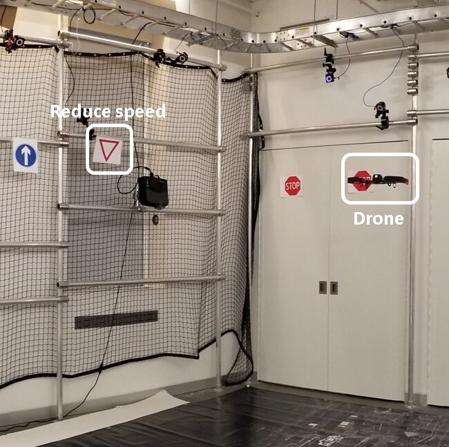
|
Real-Time Navigation for Autonomous Aerial Vehicles Using Video
K. Anjum, P. Pandey, V. Sadhu, R. Tron, D. Pompili
arXiv preprint, 2025
A novel approach for real-time autonomous navigation using video streams for aerial vehicles.
|
|
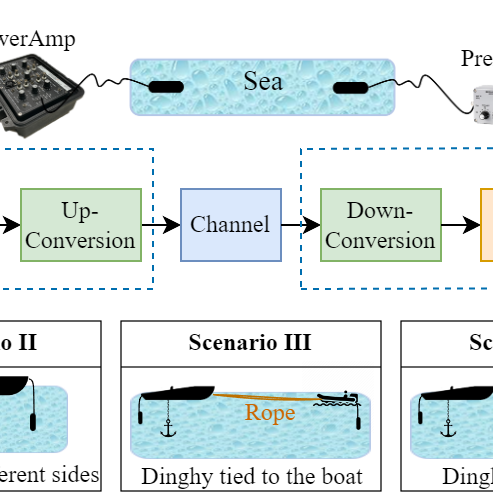
|
ACommSet: Underwater Acoustic Communications Dataset Collection and Evaluation
Z. Qi, K. Anjum, D. Pompili
Proceedings of the 18th International Conference on Underwater Networks, 2024
Creation and evaluation of a comprehensive underwater acoustic communications dataset for research.
|
|
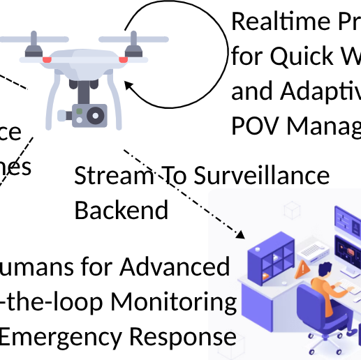
|
Leveraging On-board UAV Motion Estimation for Lightweight Macroscopic Crowd Identification
K. Anjum, T. Chowdhury, S. Mandava, B. Piccoli, D. Pompili
IEEE International Conference on Pervasive Computing and Communications, 2024
A method to identify crowd patterns using drone movement data with minimal computational resources.
|
|
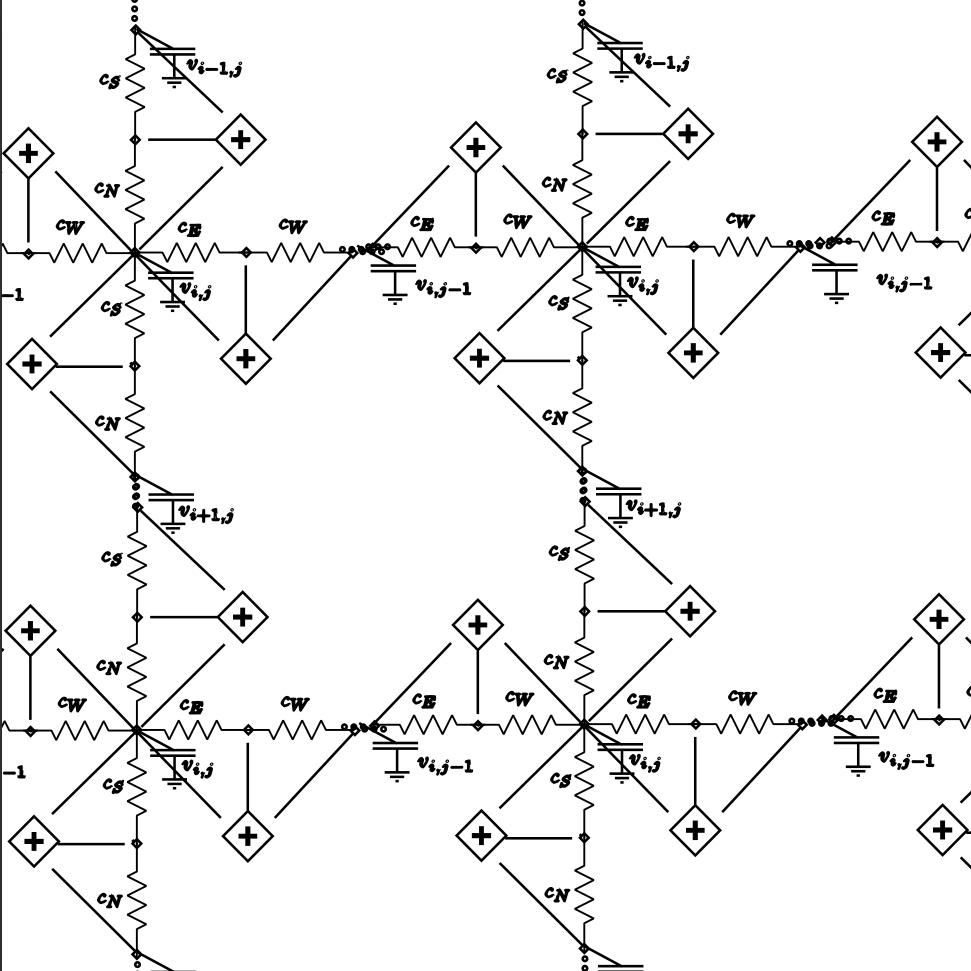
|
Battery-Less Implantable Continuous EEG Monitoring via Anisotropic Diffusion
K. Anjum, D. Pompili
IEEE Journal on Selected Areas in Communications, 2024
An innovative approach for continuous EEG monitoring using battery-less implantable devices.
|
|
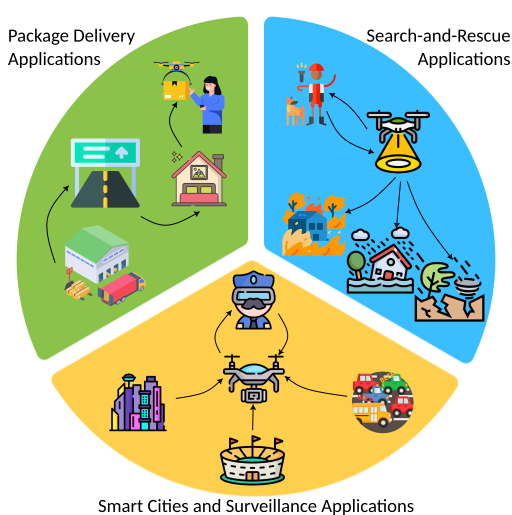
|
ContextBots: Real-time Context-aware Inference on Aerial Robots
K. Anjum, V. Sadhu, D. Pompili
International Conference on Distributed Computing in Smart Systems, 2024
A framework for enabling aerial robots to make real-time context-aware inferences during operation.
|
|
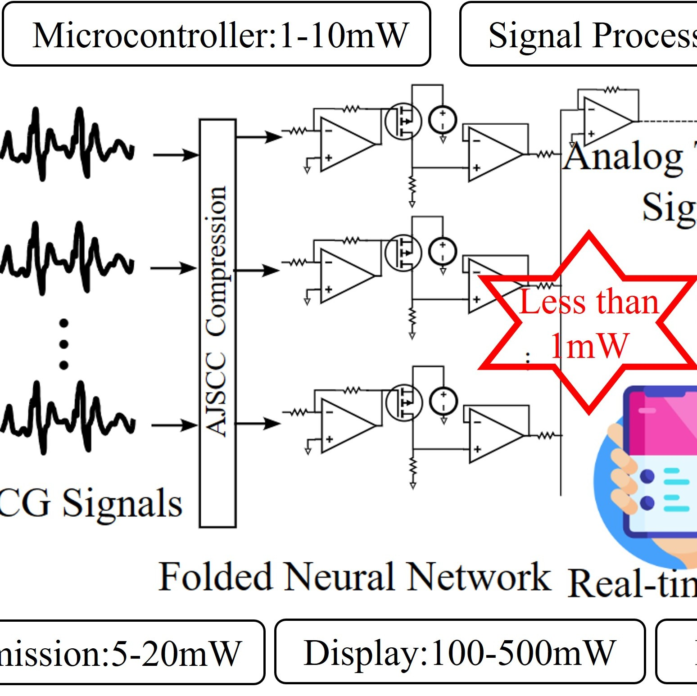
|
Ultra-low power analog folded neural network for cardiovascular health monitoring
Y.T. Hsieh, K. Anjum, D. Pompili
IEEE Journal of Biomedical and Health Informatics, 2024
A novel analog neural network architecture for power-efficient cardiovascular health monitoring.
|
|
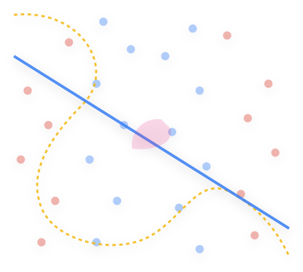
|
The Power Of Simplicity: Why Simple Linear Models Outperform Complex Machine Learning Techniques--Case Of Breast Cancer Diagnosis
M.A. Arshad, S. Shahriar, K. Anjum
arXiv preprint, 2023
Analysis showing how simple linear models can outperform complex machine learning models for breast cancer diagnosis.
|
|
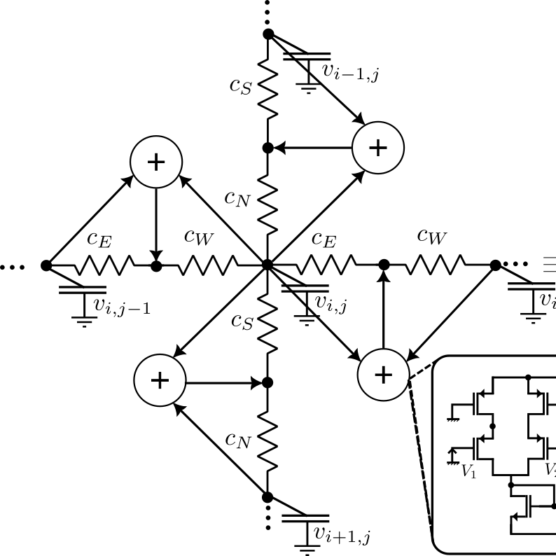
|
Anisotropic diffusion-based analog CNN architecture for continuous EEG monitoring
K. Anjum, D. Pompili
IEEE International Conference on Mobile Ad Hoc and Smart Systems, 2023
A novel CNN architecture using anisotropic diffusion for efficient EEG signal processing.
|
|
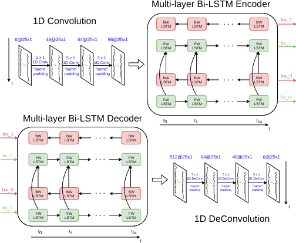
|
On-board deep-learning-based unmanned aerial vehicle fault cause detection and classification via FPGAs
V. Sadhu, K. Anjum, D. Pompili
IEEE Transactions on Robotics, 2023
A deep learning approach for real-time fault detection and classification in UAVs using FPGAs.
|
|
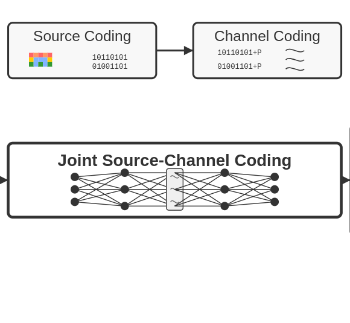
|
Deep joint source-channel coding for underwater image transmission
K. Anjum, Z. Qi, D. Pompili
Proceedings of the International Conference on Underwater Networks, 2022
A joint source-channel coding approach for efficient underwater image transmission.
|
|
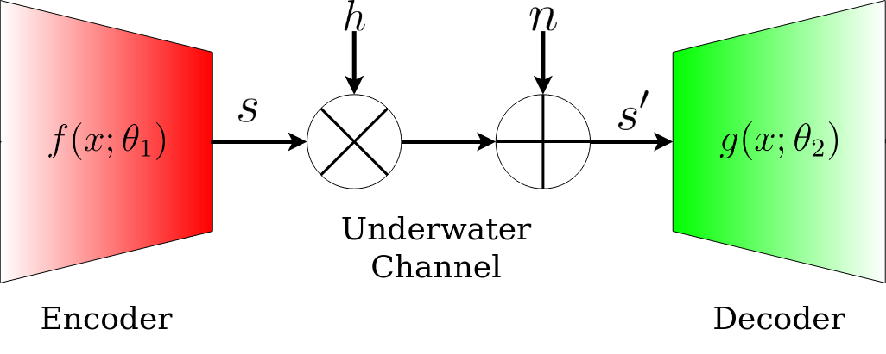
|
Acoustic channel-aware autoencoder-based compression for underwater image transmission
K. Anjum, Z. Li, D. Pompili
Underwater Communications and Networking Conference, 2022
An autoencoder approach for compressing images for underwater acoustic transmission.
|
|
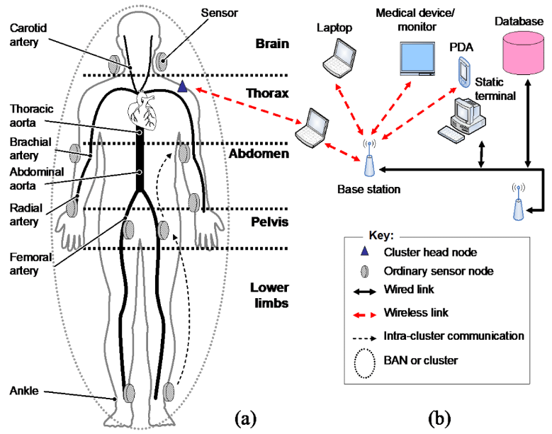
|
Ultra-low power analog recurrent neural network design approximation for wireless health monitoring
Y.T. Hsieh, K. Anjum, D. Pompili
IEEE International Conference on Mobile Ad Hoc and Smart Systems, 2022
A low-power RNN design for health monitoring in wireless environments.
|
|
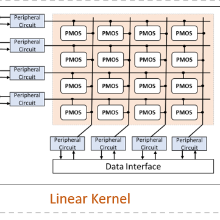
|
Hybrid analog-digital sensing approach for low-power real-time anomaly detection in drones
Y.T. Hsieh, K. Anjum, S. Huang, I. Kulkarni, D. Pompili
IEEE International Conference on Mobile Ad Hoc and Smart Systems, 2021
A hybrid approach combining analog and digital sensing for energy-efficient anomaly detection in drones.
|
|
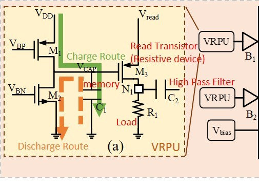
|
Neural network design via voltage-based resistive processing unit and diode activation function-a new architecture
Y.T. Hsieh, K. Anjum, S. Huang, I. Kulkarni, D. Pompili
IEEE International Midwest Symposium on Circuits and Systems, 2021
A novel neural network architecture using voltage-based resistive processing units and diode activation functions.
|
|
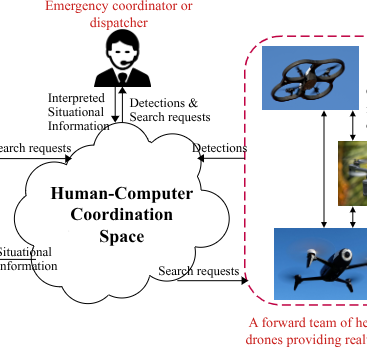
|
Multi-UAV situational awareness via distributed and approximate computing techniques
K. Anjum, V. Sadhu, D. Pompili
IEEE International Conference on Mobile Ad Hoc and Sensor Systems, 2020
Techniques for enabling situational awareness in multi-UAV systems using distributed and approximate computing.
|
Patents
Recent patents from my research work.
|
Experience
Professional research experience in academic settings.
|
|
|
Graduate Research Assistant
2019 - Present
Cyber-Physical Systems Laboratory, Rutgers University
Conducting research on embedded systems, neural network optimizations, and underwater communications. Developing novel approaches for battery-less implantable devices and UAV systems.
|
|
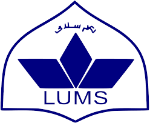
|
Research Assistant
2018 - 2019
Lahore University of Management Sciences (LUMS)
Worked on machine learning applications for medical image analysis and pattern recognition. Developed algorithms for early detection of neurological disorders using sensor data.
|
About
I love everything open-source and like to contribute to it a lot. I like how we come together as developers and make amazing things. I like to work on different projects which challenge me in my free-time and like to enhance my skill-set. I have showcased some of them here too. Also, feel free to dig around my blog and do contact me if you have any ideas. Stay strong and stay energetic.
|
Academic Service
|
Reviewer, IEEE Transactions on Mobile Computing (10 papers)
Reviewer, IEEE Transactions on Robotics (2 papers)
Reviewer, IEEE International Conference on Intelligent Robots and Systems (2 papers)
Reviewer, IEEE Sensors Journal (1 paper)
Reviewer, IEEE Robotics and Automation Letters (1 paper)
Reviewer, Journal of Oceanic Engineering (1 paper)
|
|
Teaching
|
Linear Signals and Systems, Undergraduate course, ECE, Rutgers University, 2019
Physics 205, Teaching Assistant, Physics, Rutgers University, Spring 2025
Physics 206, Teaching Assistant, Physics, Rutgers University, Spring 2024
Physics 205, Teaching Assistant, Physics, Rutgers University, Fall 2023
Circuits II, Undergraduate course, EE, Lahore University of Management Sciences, 2018
Signals and Systems, Undergraduate course, EE, Lahore University of Management Sciences, 2018
Engineering Modelling, Undergraduate course, EE, Lahore University of Management Sciences, 2017
|
|
{kind=link}